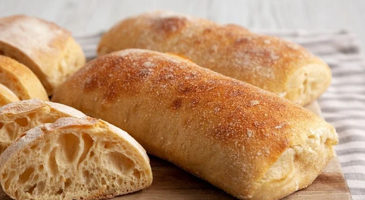

Ciabata

Descrição
Esse pão ciabatta vai se tornar o seu preferido para fazer em casa e turbinar os seus lanches ou cafés da manhã!
Ingredientes
- 400 g de farinha de trigo
- 3 g de fermento biológico seco
- 1 e 1/2 colher (chá) de sal
- 300 ml de água morna
- 2 colheres (sopa) de azeite
Modo de Preparo
- Em uma tigela grande, misture a água morna com o fermento biológico seco e o azeite.
- Peneire a farinha de trigo e o sal na mesma tigela e mexa novamente para incorporar todos os ingredientes até formar uma massa grudenta.
- Cubra a tigela com a massa com um pano limpo e deixe descansar por 15 minutos.
- Após o descanso, retire o pano e faça dobras na massa por toda a sua extensão, puxando da lateral para o centro. Repita esse movimento pelo menos 10 vezes. Dica: umedeça as mãos com água para a massa não grudar.
- Cubra novamente e deixe descansar por mais 30 minutos.
- Repita o processo das dobras.
- Em seguida, vire a massa de cabeça para baixo, cubra e deixe descansar por mais 30 minutos.
- Transfira a massa da ciabatta para uma bancada enfarinhada e ajuste com delicadeza para que fique em um formato retangular.
- Corte os pães em porções na quantidade e tamanho de sua preferência e mova-os para uma forma enfarinhada, deixando um espaço entre eles para crescer.
- Deixe a massa descansar por mais 30 minutos já cortada para o pão começar a ganhar forma.
- Leve a ciabatta para assar em um forno preaquecido a 250°C por 20 a 25 minutos ou até dourar levemente. Para criar a casquinha crocante, borrife um pouco de água na parte de baixo do forno ou adicione uma assadeira com água para fazer vapor na hora de assar a ciabatta.
Voltar